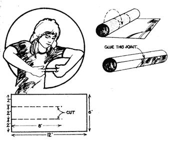
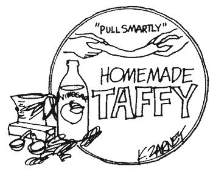
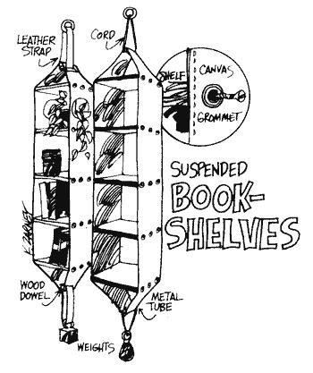
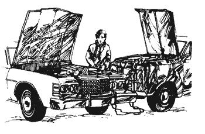
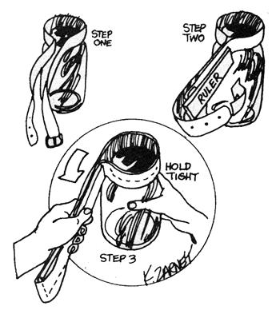
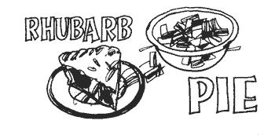
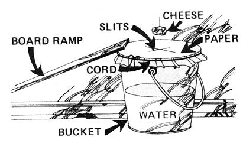
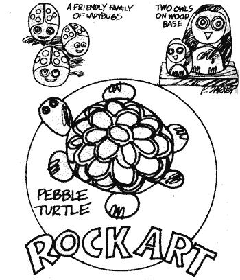
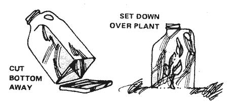

Three and a half years ago back in the late summer or early fall of 1972 THE Mother Earth News Began syndication of a newspaper column. Gosh knows we didn't need the extra work (we were already putting in 20 hour days, seven days a week just trying to keep the magazine coming out on a regular schedule). But we were given the opportunity to reach approximately 10 million people three times a week with MOTHER's ecology recycling do it yourself use less energy message. And we couldn't pass that up.
Of course, we had to sugarcoat our theme a little for the more general readership of the 115 newspapers that soon carried our feature. But that was a small price to pay, we felt, for the privilege of putting any down home approach to life in front of so many individuals in this age of Big Business, Big Labor, and Big Government.
Maybe you've seen how we handled the job, maybe not. At any rate, here's a few of the columns that have appeared around the country (and parts of Canada) during the past 40 or so months.
If you have children, you know how difficult the last cold days of winter and the first slushy
cut weeks of spring can be. The young'uns impatient to get outside become increasingly cranky, loud, and difficult to live with. And the adults of the household, suffering from cabin fever of their own, steadily wish more and more desperately for something anything! that will quiet the little dears for a solid fifteen minutes. And that's exactly what grandma's old time finger trap is designed to do. The traditional toy is simple enough for a six year old to construct and devilish enough to capture the attention of a teenager.
FOR KIDS AND KIDS AT HEART ONLY: Cut a 6" X 12" piece of heavy paper as shown. Then, starting at the slitted end, roll it into a tube with an inside diameter of approximately one half inch. Glue the joint, let it dry and then tell a friend, brother, or sister that you want to show him or her a "magic trick". Ask your assistant (or heh, heh victim) to stick both index fingers into the tube. Then ask him or her to pull them out. And, finally, listen to your victim howl when that proves impossible .
AND BACK TO YOU PARENTS: So OK. The kids are screaming again. You did have your fifteen minutes of quiet (while the finger trap was being constructed), though, didn't you?
For downright family fun, it's hard to beat a good taffy pull. Sure, the sugar's rough on your teeth but what's life without a little sin?
Make enough extra fine white taffy for two people to pull by gently boiling (while constantly stirring) 2 cups white Karo syrup, I cup granulated sugar, 4 teaspoons vinegar and 2 tablespoons butter until a spoonful of the mixture forms a hard ball when dropped into cool water.
Pour the boiled mixture onto a buttered platter and turn its edges in again and again as it cools (this is the time to work in two teaspoons of vanilla, lemon or mint flavoring). When the solidifying taffy is cold enough to pick up, butter your hands and pull the candy out into a long, thick strip. Fold and squeeze it into a lump and pull the taffy again and again (rebuttering your hands as necessary) until it's white and starts to pull apart. Finally, stretch and twist the candy into a long roll 3/4" in diameter and cut into pieces an inch and a half long with buttered shears. Wrap in waxed paper (if you have any left!) and store in a cool place in a closed tin.
James Hennessey and Victor Papanek have just published an exciting new book entitled Nomadic Furniture and it's crammed full of plans for lightweight houseware that "folds, inflates, knocks down, stacks, or is disposable and can be recycled".
Typical of the interesting designs in the manual are these suspended bookshelves made of canvas and 1/2" plywood. This is one piece of attractive modern furniture that anyone should be able to make!
The proportions are up to you, although shelves measuring 12 inches square in a canvas "frame" about 78 inches tall seem both quite pleasing and useful. Hem the edges of the canvas, of course, and put grommets through the fabric at the shelf stations. Then anchor the pieces of plywood in place with wood screws. Suspend the finished cases from the ceiling and hang weights from their bottoms to stabilize ,them. The units collapse easily for moving.
Brrrrrr! If cold weather hasn't hit your section of the country yet, it soon will. And that means we're entering the season of the year when your automobile or truck is most likely to need a "jumper" start on some frosty morning.
Before you attempt such an operation, however, you should heed a warning from Dr. Frederick H. Davidorf. Dr. Davidorf an assistant professor of ophthalmology at Ohio State University says, "if a jumped start is improperly conducted, it can cause a car battery to explode. And I've documented a number of serious eye injuries that have resulted from such accidents."
To avoid a similar mishap, the Ohio ophthalmologist recommends that you use the following method of starting a car with a dead battery. FIRST: Connect one end of a jumper cable to the positive pole of the dead battery.
SECOND: Fasten the other end of the same cable to the positive pole of the booster battery.
THIRD: Connect one end of the second cable to the negative pole of the booster battery.
FOURTH: Fasten the other end of the second cable to the engine block of the. disabled vehicle and as far away from the battery as possible.
FIFTH: Start the disabled car or truck.
SIXTH: Once the vehicle is running, remove the second cable (the one fastened to its engine block) first.
SEVENTH: Then disconnect the other end of the same cable from the negative pole of the booster battery.
EIGHTH: Remove the first cable from the newly revived battery.
NINTH: And last, disconnect the first cable from the booster battery.
One of the most common little annoyances that plague both the ole farm kitchen and the modern apartment is the stubborn jar lid that just won't come off. Chances are, if you've ever twisted your palms red on one of these rascals, you won't believe how easily a jammed top can be removed with only an ordinary leather belt and wooden ruler.
Loop the middle of the belt around the lid, place the ruler alongside the doubled length of leather strap and bring the belt's ends back around the other side of the piece of wood. Grip tightly and twist. Your extended leverage should unwind that balky top so easily that it'll actually be started before you know it!
Rhubarb is just about the earliest of all spring vegetables and it's not unusual to find this plant's knobby red head beginning to poke through the soil while there's still snow on the ground. Better hurry if you want to enjoy some, though by late May, rhubarb is usually past its prime and best forgotten until next spring rolls around.
This plant is extremely hardy and volunteer patches of rhubarb are commonly found growing around old homesteads, city lots and farm gardens. One caution, however, before you rush out to gather the vegetable: the roots are worthless as food and rhubarb leaves contain calcium oxalate, a poison. Only the stems which are packed with vitamins A and C, calcium and iron are edible.
Cut or snap off a good quantity of rhubarb stalks just above the ground and immediately below the leaves. Peel off the outside skin and chop the stems into pieces half an inch long. For a nine inch pie, you'll need four cups of the cleaned and diced stalks.
Mix together one rounded cup of sugar, two tablespoons flour and 1/8 to 1/4 teaspoon of salt. Blend the mixture into the four cups of rhubarb, pour it all into an unbaked pie crust in the nine inch pan and dot with butter. You can also sprinkle 1/4 teaspoon of ground nutmeg across the filling's surface if you like.
Top your pie with a ventilated or lattice crust and bake the dessert in a 425°F oven for 40 to 45 minutes or until the fruit is tender when pricked with a fork. If the upper crust browns too quickly, cover it with brown paper or aluminum foil and if this old farmer's tangy sweet sour treat is too tart for you, try substituting apples for half the rhubarb.
It's fall. The flies and mosquito's of summer are gone from the house but the mice of autumn are beginning to creep in. Time to set traps for the little blighters.
Great granddad seldom wasted money on store bought mousetraps. Instead, he often controlled the little rodents which raided his pantry with a bucket half full of water, a board, a sheet of brown paper, some string and bait. You can too once you know his trick.
Cover a partly filled pail with brown paper (cut from a large grocery sack) and hold the paper taut and in place with string. Then set the pail in a corner of the utility room, kitchen, pantry or whatever part of the house is being frequented by your unwanted guests.
Use a piece of scrap lumber to make a nice little ramp from the floor to the top of the bucket and put a small mound of grain or bits of cheese and bread in the center of the pail's paper top. It's also a good idea to suspend an attractive chunk of cheese directly over the mound of bait.
Let the mice gorge on this feast for two or three nights (replace the bait as necessary) until the whole tribe gets in the habit of freeloading on top of the bucket. Then, instead of serving up any more goodies, use a razor blade or very sharp knife to carefully slit an "X" into the pail's cover thereby creating a trap that automatically resets itself.
A quick dump of the bucket the following morning should dispose of every troublesome mouse in the group.
Here's a craft project that the kids will find both fun and inexpensive (and grown ups usually dig, too). The basic materials interestingly shaped rocks and pebbles are free for the finding.
Let every member of the family help in the search for stones and keep your eyes open for bits of wood and weathered sticks to use as bases or standards. Clean the pebbles with a damp rag and towel them dry.
Decorate your mini sculptures with acrylic or polymer paints, as they have brilliant color, dry quickly and are moisture resistant. If you cement stones together use epoxy glue and allow plenty of drying time. A fight coat of gloss or satin varnish gives a nice final surface to the rocks.
Place your creation on a piece of driftwood, section of weathered board, or make it into a piece of jewelry most large hobby stores have the necessary hardware. Any of these handmade items make nice, warm, happy gifts for your friends.
MAKE YOUR OWN ANCHORED HOT CAP
Commercial gardeners customarily "get the jump on spring" by rooting tomato and other seedlings outside two weeks or so before the appropriate growing season actually starts in their area. How? By protecting each little plant with a mini greenhouse, or "hot cap".
You can construct your own hot caps of heavy waxed paper as shown here. Or, if your family drinks a lot of milk, you can make even better hot caps even easier. Just cut the bottoms out of your empty plastic jugs and set the containers down over the plants you want to shield from early spring's chill night air.
One caution, however: Plants need ventilation. Remove your shelters in the late morning and replace them only in the afternoon when temperatures again begin to drop for the day.
Old timers back in the hills of the southeastern Unit: States used to "shoot marvels" (play marbles) with Owl that amazingly enough were perfectly spherical shape. Flat landers who happened across these wonder pebbles always asked how they had been formed ail naturally enough, were treated to some rather farfet & explanations. "Them little round rocks come out of mountain turkey gizzards," the wide eyed visitors were told. "They's had mit that nobody ain't never seen. He files them stow. down with alligator teeth and leaves 'em out where folks find 'em." In actual fact, the "stone marvels" were smoothed a down so perfectly by a very primitive but very effective use of water power. First, a hole was drilled straight down a couple of inches into a boulder just below a small drop in a mountain stream. Then a piece of hollowed out stem or store bought pipe was positioned so that a small but continuous flow of water would fall into one edge of the opening. After that, it was a simple matter of dropping a nearly circular pebble into the indentation and then letting it spin over and over for days until it had worn itself "jest as round as a fish egg and smooth as a baby's behind".
|
 |
 |
 |
|
 |
 |
 |
|
 |
 |
 |